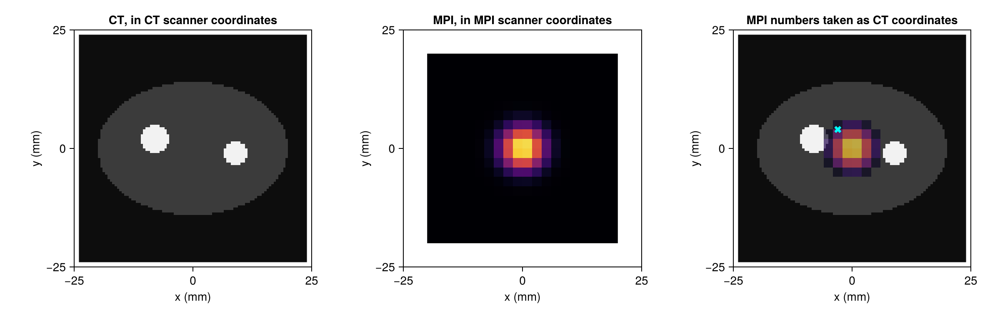
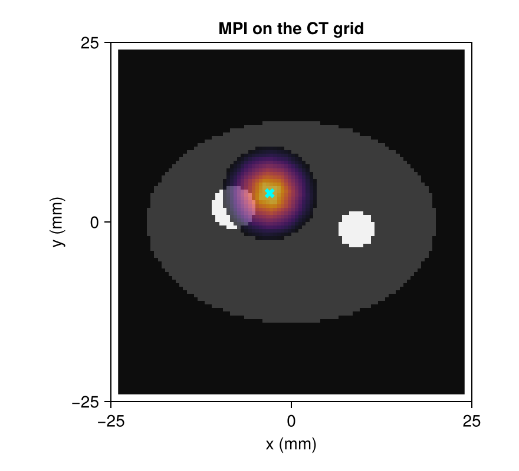

Overlay Images from Two Modalities
A CT image shows the anatomy, an MPI image the distribution of a tracer. Each scanner reconstructs in its own coordinates, so the two images cannot be overlaid pixel by pixel, even when their grids look alike. This tutorial gives each image its space, relates the spaces by a transform and resamples the MPI image onto the CT grid. The example is 2D; the same calls work in 3D. Grids, Spaces and Transforms explains spaces and transforms, Define a Space how packages define them.
using TomoImages, CairoMakieTwo spaces
Each scanner gets a space: a type, so that images and transforms carry it and functions can check it.
struct CTScanner <: AbstractSpace end
struct MPIScanner <: AbstractSpace endThe CT image
96 × 96 pixels of 0.5 mm in the CT scanner's coordinates. The anatomy: a body (attenuation 0.2) with two bones (attenuation 1.0).
ct_grid = GridGeometry((96, 96); spacing=(0.5, 0.5), origin=(-23.75, -23.75), space=CTScanner())
function anatomy(x, y)
hypot(x + 8, y - 2) < 3 || hypot(x - 9, y + 1) < 2.5 ? 1.0 : # bones
(x / 20)^2 + (y / 14)^2 < 1 ? 0.2 : 0.0 # body
end
ct = TomoImage([anatomy(index_to_world(ct_grid, (i, j))...) for i in 1:96, j in 1:96], ct_grid;
dims=(x=GridAxis(1), y=GridAxis(2)));The MPI image
20 × 20 pixels of 2 mm in the MPI scanner's coordinates. In the MPI scanner the patient lies shifted and rotated by 15 degrees. A registration computes this relation; here it is given as a transform t. It maps positions in the CT scanner (the fixed image, whose grid is the output) to positions in the MPI scanner (the moving image, which is resampled), the direction resampling needs:
c, s = cos(deg2rad(15)), sin(deg2rad(15))
t = AffineTransform([c -s; s c], [4.0, -3.0]; source=CTScanner(), target=MPIScanner());The tracer sits next to the left bone, at p in CT coordinates. The MPI image sees it at t(p) in its own coordinates, near the center of its field of view, blurred to a Gaussian with a standard deviation of 3 mm:
p = [-3.0, 4.0]
t(p)2-element StaticArraysCore.SVector{2, Float64} with indices SOneTo(2):
0.066946340722712
0.08724616984871103mpi_grid = GridGeometry((20, 20); spacing=(2.0, 2.0), origin=(-19.0, -19.0), space=MPIScanner())
tracer(x, y) = exp(-sum(abs2, [x, y] - t(p)) / (2 * 3.0^2))
mpi = TomoImage([tracer(index_to_world(mpi_grid, (i, j))...) for i in 1:20, j in 1:20], mpi_grid;
dims=(x=GridAxis(1), y=GridAxis(2)));Taking the numbers of the MPI grid as CT coordinates, that is, overlaying the arrays as they are, places the tracer at t(p) in the CT image, about 8 mm away from the bone it belongs to:
naive = TomoImage(parent(mpi), GridGeometry((20, 20); spacing=(2.0, 2.0), origin=(-19.0, -19.0), space=CTScanner()));
The gray scale shows the attenuation from 0 to 1, the colors the tracer from 0.1 to 1; values below 0.1 are not drawn. The cross marks p, where the tracer is.
Resampling through the transform
Without a transform, resample refuses, because the two grids are in different spaces:
resample(mpi, ct_grid)ArgumentError: resample without a transform needs the image in the space of the target grid: expected space CTScanner, got MPIScannerWith the transform, every CT pixel takes the MPI value at its position:
overlay = resample(mpi, ct_grid, t);The overlay is on the CT grid, in the CT scanner's space, and its maximum lies at the tracer position p, up to the 2 mm pixels of the MPI image:
space(overlay), isapprox(geometry(overlay), ct_grid), index_to_world(ct_grid, Tuple(argmax(parent(overlay))))(Main.CTScanner(), true, [-2.25, 4.75])
The cross marks p; the tracer is now next to the left bone. A pixel of the MPI image covers 4 × 4 CT pixels, so the overlay is smooth but coarse: resampling places the values, it does not add resolution.
This page was generated using Literate.jl.